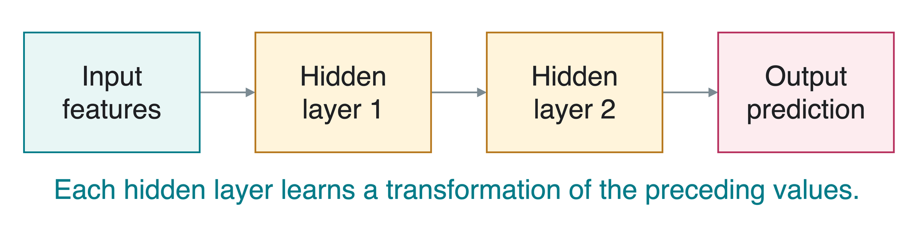
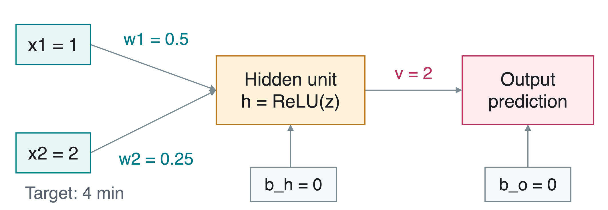
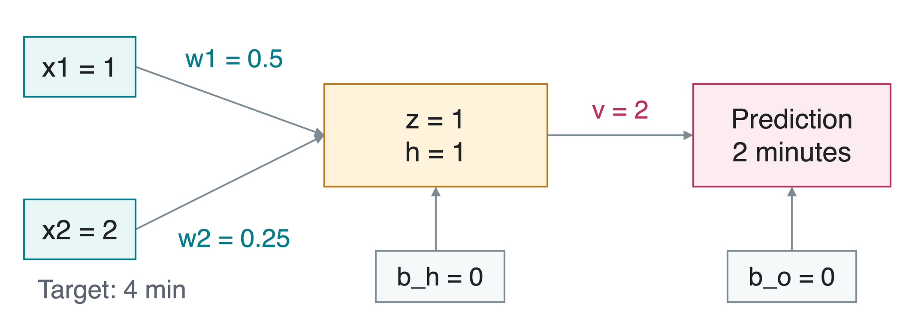
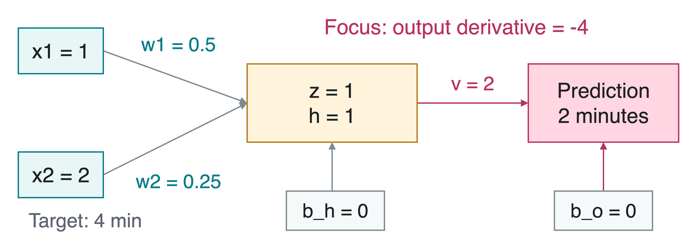
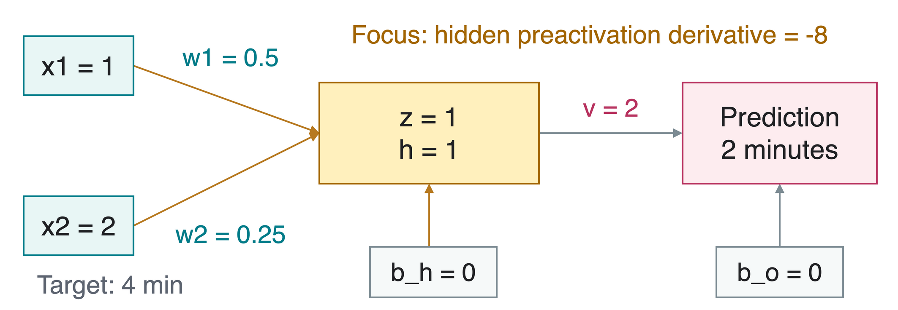
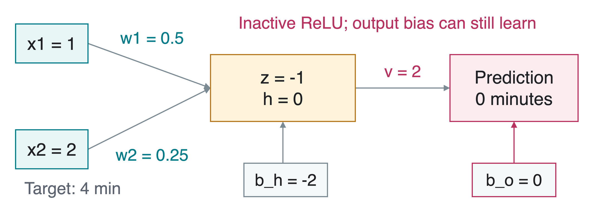

CS 463G & CS 663
Lecture 28: Deep Learning
Fall 2026
From Inputs to Learned Features
Deep learning trains neural networks with multiple layers of transformations. A representation is an intermediate description of the input.
Return to delivery-time prediction:
Input x_1 : distance, in kilometers.
Input x_2 : number of stops.
Target y : observed delivery time, in minutes.
A neural network can learn useful combinations of these inputs rather than requiring us to specify every combination in advance.
We still choose the data and inputs. Learned representations do not remove the need for good data or evaluation.
The delivery example continues Lecture 25’s motivation, but all numbers used here are newly constructed teaching values, not measured campus data. A network can learn representations from already selected features as well as from raw inputs. Avoid a blanket claim that other machine-learning methods always require manual features or cannot scale. The courier cartoon is reused unchanged from Lecture 25. Conceptual source: AIMA, U.S. fourth edition Section 21.1 / Global fourth edition Section 22.1, and the supplied Spring 2025 Deep Learning lecture.
Inputs, Hidden Layers, and Outputs
A feedforward network sends information from inputs to outputs, without a feedback loop.

The input layer receives the measured features.
Hidden layers compute intermediate values, rather than the final answer.The output layer produces the prediction, written \hat y .
Multiple hidden layers make a network deep. Our later one-hidden-unit example is deliberately tiny so we can calculate its gradients.
The diagram shows a generic deep feedforward architecture, not a claim that our numerical notebook has two hidden layers. Hidden does not mean secret: these values are simply not the target labels. The final layer’s form depends on the prediction task. Here we use a numeric regression output, not a classification probability. Source: the supplied Spring 2025 Beamer main.tex and DNN_fig.tex, revised manually.
A Neuron and Its Activation
A neuron computes a weighted sum and then an activation function , which transforms that sum. A bias is a learned added constant.
z=w_1x_1+w_2x_2+b_{\mathrm h},\qquad h=\operatorname{ReLU}(z).
Here w_1,w_2 are weights, b_{\mathrm h} is the hidden bias, z is the preactivation (weighted sum), and h is the hidden output.
ReLU means rectified linear unit : \operatorname{ReLU}(z)=\max(0,z) .
Nonlinear activations matter: stacking only weighted sums and biases still gives a single affine map, a weighted sum plus a constant.
An artificial neuron is a mathematical operation, not a detailed biological-neuron model. The subscript h labels the hidden layer. ReLU is nonlinear because its slope changes at zero. A composition of affine maps is affine, so depth without nonlinearities does not create a richer family of input/output maps. At zero ReLU has no unique derivative; PyTorch chooses zero for backpropagation. Source: https://docs.pytorch.org/docs/stable/generated/torch.nn.ReLU.html and the supplied single_neuron.tex.
Our Tiny Network
Constructed example: x_1=1 km, x_2=2 stops, target y=4 minutes. The output has weight v and bias b_{\mathrm o} : \hat y=vh+b_{\mathrm o} .

Initial parameters: w_1=0.5 , w_2=0.25 , b_{\mathrm h}=0 , v=2 , b_{\mathrm o}=0 .
These chosen parameters make the arithmetic transparent; they are not a fitted delivery model. The hidden scalar has no guaranteed human-readable interpretation. There are five scalar parameters, stored as four tensors in the notebook: w_hidden contains w1 and w2, b_hidden contains b_h, w_output contains v, and b_output contains b_o. This tiny one-hidden-unit network illustrates the same forward/backward machinery used in deeper networks.
Forward Pass: Compute the Prediction
The forward pass evaluates the network with its current parameters.

z=0.5\cdot1+0.25\cdot2+0=1 , so h=\max(0,1)=1 .
\hat y=2\cdot1+0=2 minutes. The target is 4 minutes.
No parameter changes during the forward pass. The input weights, output weight, and both biases are the initial values from the preceding slide. The numerical diagram also supplies a visual reference during the later derivative calculations.
Loss: Measure the Error
A loss measures disagreement with the target. For N numeric examples, mean squared error (MSE) is
L=\frac{1}{N}\sum_{i=1}^{N}(\hat y_i-y_i)^2,
where y_i is target i and \hat y_i is its prediction.
For our one-example calculation:
L=(\hat y-y)^2=(2-4)^2=4.
We want to reduce this loss by changing the weights and biases, while keeping the input and target fixed.
Use the same unweighted mean-squared-error convention in slides and code: no factor of one half. Some texts choose half the squared error, which rescales its derivatives; that is not the convention here. With one scalar output N=1. For a tensor with multiple examples/output entries, the notebook averages all prediction elements and divides its derivative by prediction.numel(). Source: https://docs.pytorch.org/docs/stable/generated/torch.nn.MSELoss.html.
Training: Differentiate, Then Update
A gradient measures how loss changes with a parameter. Backpropagation computes these derivatives backward through the network.
for each batch in trainingData
clearGradients (parameters )
prediction = forward (inputs , parameters )
loss = MSE (prediction , targets )
gradients = backpropagate (loss )
update (parameters , gradients , learningRate )
A batch groups examples; an epoch is one pass through the training dataset. Repeat passes as needed.
Backpropagation computes gradients. The optimizer uses them to change parameters. These are separate operations.
For the numerical walkthrough the batch contains one example. The pseudocode intentionally separates clearing stored gradients, evaluating the current computation, differentiating, and updating. A model can have correctly computed gradients and still make a poor optimization step if the learning rate is too large. Source: https://docs.pytorch.org/tutorials/beginner/basics/optimization_tutorial.html.
Chain Rule: The Output Layer
The chain rule multiplies local derivatives along a computation path. Write g_{\mathrm o} for the loss derivative with respect to the prediction.

g_{\mathrm o}=\frac{\partial L}{\partial\hat y}=2(\hat y-y)=2(2-4)=-4.
\frac{\partial L}{\partial v}=g_{\mathrm o}h=-4,\qquad
\frac{\partial L}{\partial b_{\mathrm o}}=g_{\mathrm o}=-4.
The output equation is yhat=v*h+b_o, so its local derivatives are h with respect to v, 1 with respect to b_o, and v with respect to h. When a parameter affects a loss through multiple paths, sum the path contributions. The simple graph here has one relevant path per parameter. Source: https://docs.pytorch.org/tutorials/beginner/basics/autogradqs_tutorial.html.
Chain Rule: The Hidden Layer
Here \partial L/\partial h=g_{\mathrm o}v=-4\cdot2=-8 . Since z=1>0 , ReLU’s local derivative is 1 .

Let g_{\mathrm h}=\partial L/\partial z=-8\cdot1=-8 .
w_1 g_{\mathrm h}x_1=-8\cdot1 -8
w_2 g_{\mathrm h}x_2=-8\cdot2 -16
b_{\mathrm h} g_{\mathrm h}\cdot1 -8
All derivatives use the original parameter values, including v=2. Do not update v before calculating the hidden derivatives for this same loss. The symbols g_o and g_h are derivatives, not new trainable parameters. At z=0 ReLU has no unique mathematical derivative; PyTorch uses zero. We avoid that boundary in the main numeric walkthrough.
One Gradient-Descent Update
Gradient descent subtracts the gradient times a learning rate \eta . For any one parameter \theta , \theta_{\mathrm{new}}=\theta-\eta\,\partial L/\partial\theta .
Choose \eta=0.01 and update all parameters using the gradients just computed.
w_1 0.5 -8 0.58
w_2 0.25 -16 0.41
b_{\mathrm h} 0 -8 0.08
v 2 -4 2.04
b_{\mathrm o} 0 -4 0.04
In PyTorch, loss.backward() computes gradients. optimizer.step() applies the update.
For example w2_new=.25-.01*(-16)=.41. This matches stochastic gradient descent without momentum or weight decay. The parameter gradient is computed while holding the input and target fixed. The gradient points toward the locally steepest increase, so the update uses its negative direction. A finite step is not guaranteed to improve loss for every learning rate.
Recompute with the New Parameters
A new forward pass gives
z=0.58\cdot1+0.41\cdot2+0.08=1.48,
\hat y=2.04\cdot1.48+0.04=3.0592.
Hidden output h
1 1.48
Prediction \hat y
2 minutes3.0592 minutes
Loss L
4 (3.0592-4)^2\approx0.8851
This step helped on this example. It does not establish accuracy on new deliveries, and a larger step can increase the loss.
The exact squared error after the selected update is .88510464. Recompute the hidden value as well as the output: every updated parameter can change the next prediction. These results are deterministic arithmetic for a constructed example, not an empirical evaluation of a delivery system. Validation and held-out testing remain necessary.
When ReLU Blocks a Gradient
Reset the original parameters and change only b_{\mathrm h} to -2 . Then z=0.5\cdot1+0.25\cdot2-2=-1 , so h=0 and \hat y=0 .

Input weights w_1,w_2 and hidden bias b_{\mathrm h}
0 , because ReLU’s derivative is 0 here
Output weight v
0 , because its input h is 0
Output bias b_{\mathrm o}
2(0-4)=-8 : it can still learn
This is a separate fresh case, not a continuation from the updated parameters on the preceding slide. A zero gradient on this input does not mean the hidden unit is inactive on all possible inputs forever. At exactly z=0, PyTorch chooses derivative zero. The notebook executes this branch with an independently initialized parameter dictionary.
Takeaways
Hidden layers learn intermediate representations of the inputs.
A neuron combines weights, a bias, and an activation function.
Nonlinear activations let stacked layers represent more than an affine map.
The forward pass computes predictions and loss.
Backpropagation applies the chain rule to compute parameter gradients.
An optimizer uses those gradients. Learning rate and held-out evaluation still matter.
Keep the loss definition, its derivative, and the update rule consistent.